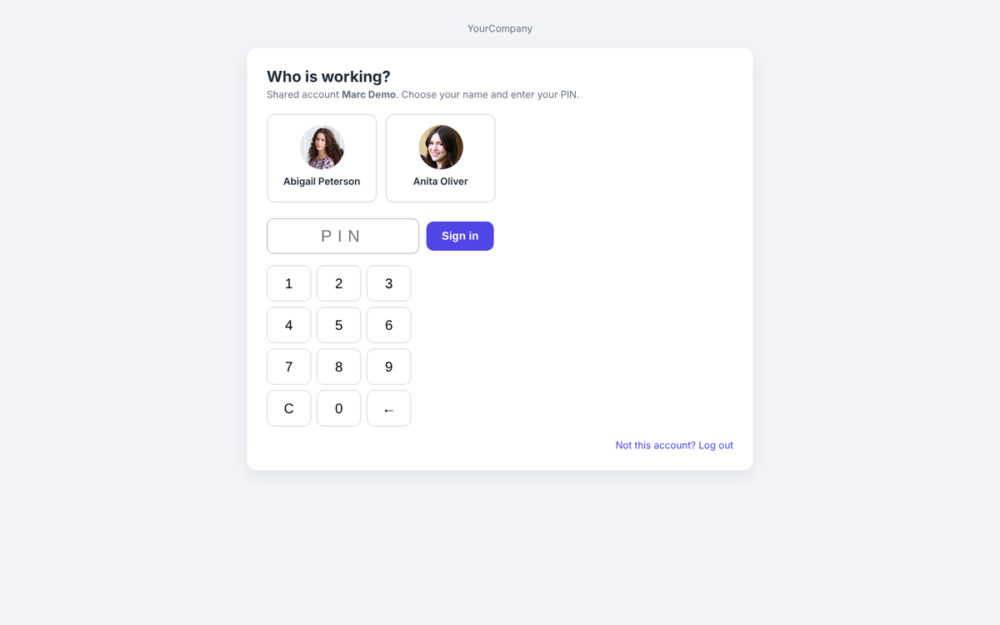
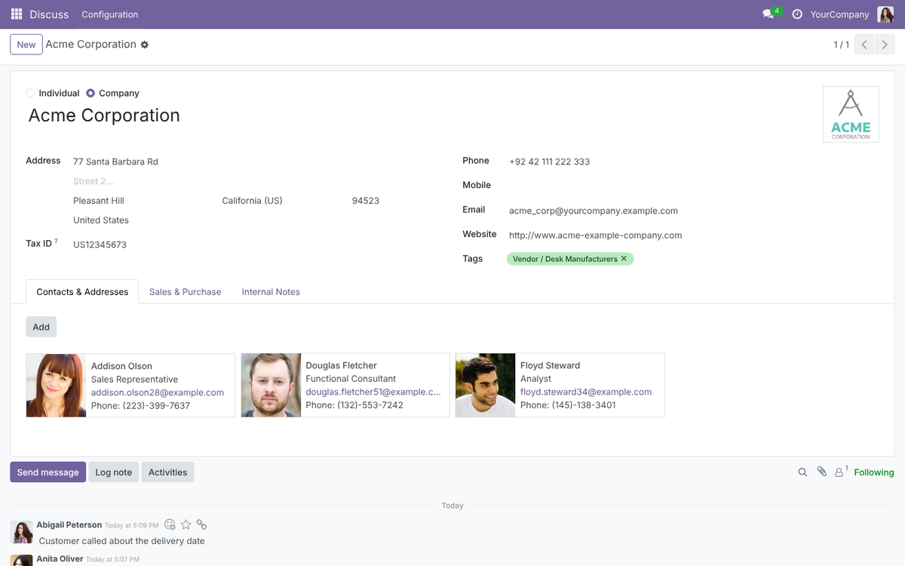
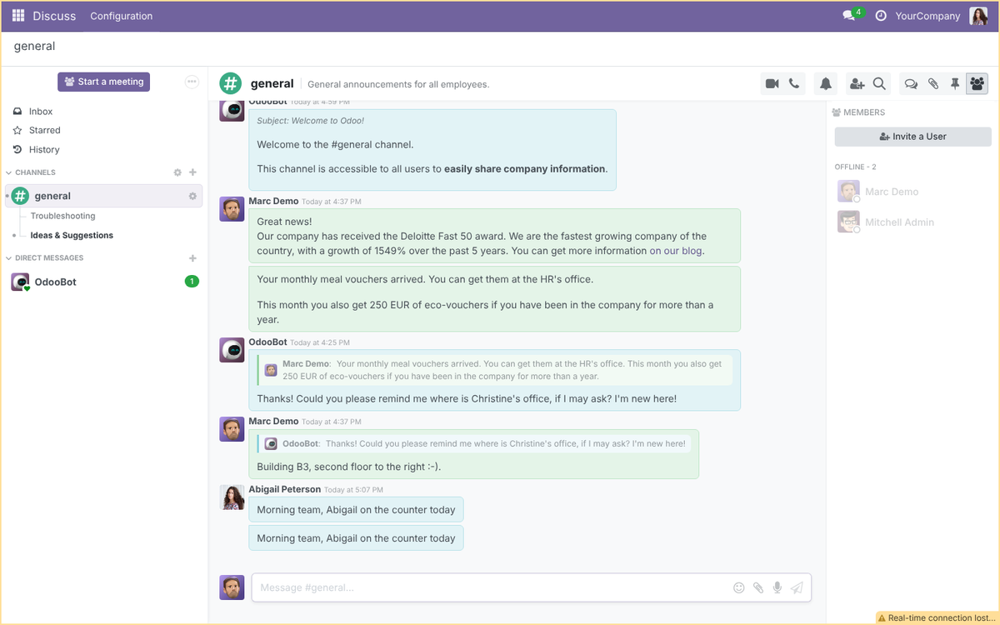
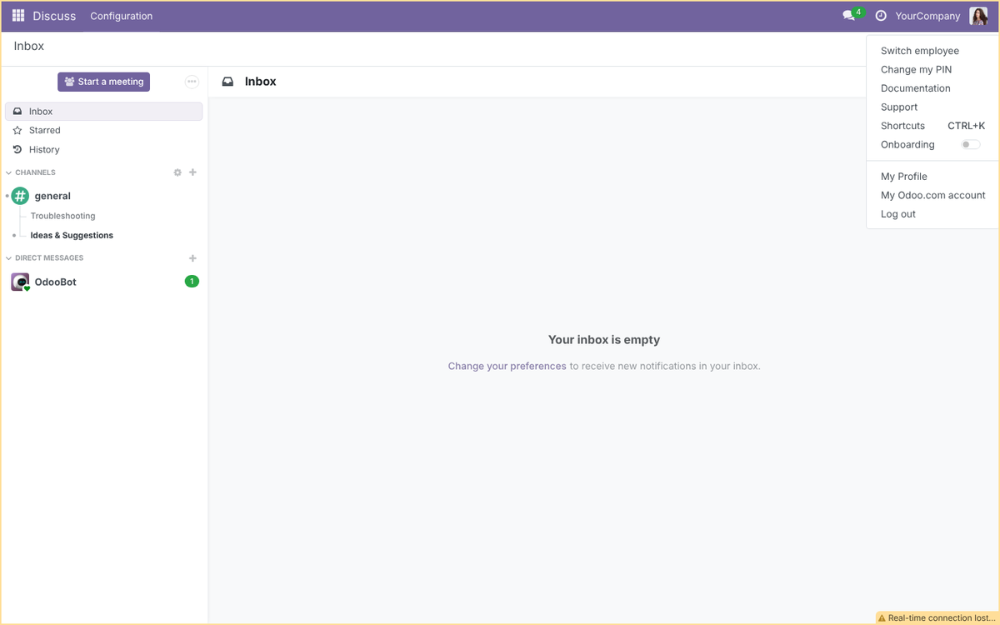
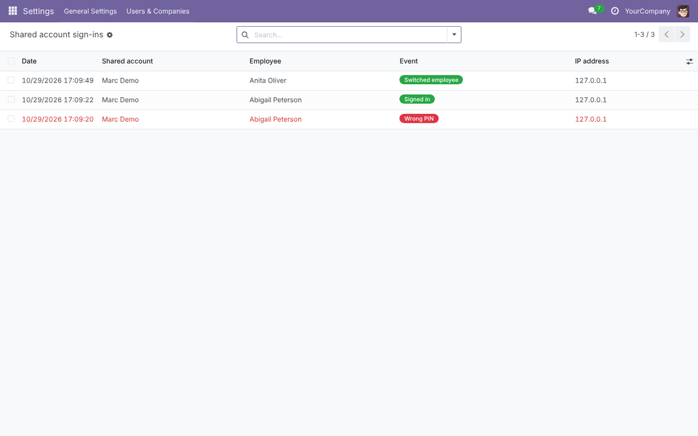
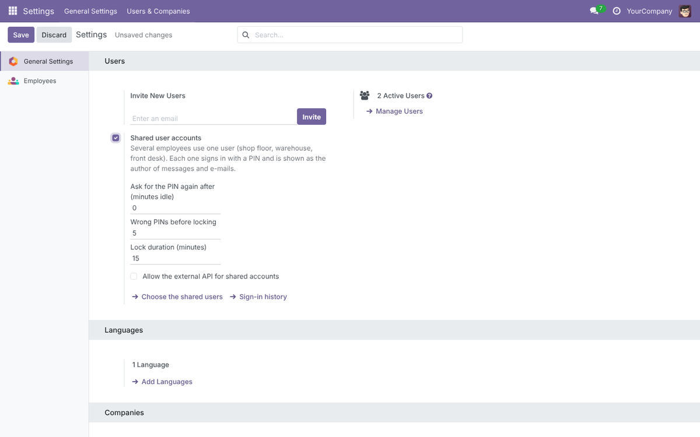
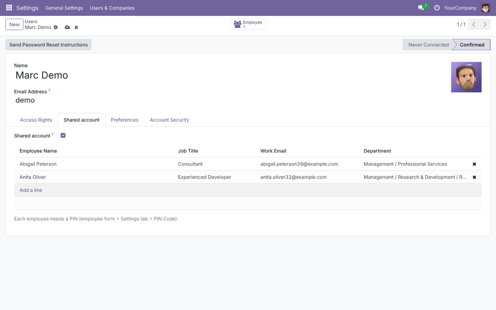

On a shared screen – shop floor, warehouse, front desk, workshop – several employees use the same Odoo user. Each one signs in with a personal PIN, and Odoo shows who wrote every message, note and e-mail.
Odoo 18 Works on every app, including custom ones PIN lockout & idle lock Sign-in history







What does it depend on?
Discuss (mail) and Employees (hr) only.
Do record "Created by" fields change?
No: Odoo still records the shared user there. The employee's name is on the messages, notes, tracking and e-mails of each record, and in the sign-in history.
Does a shared account replace Odoo user licences?
This app is about knowing who did what on a shared screen. Odoo Enterprise subscriptions are priced per person using the system: check your subscription terms before sharing an account between several people.
Is it tested?
The app ships with an automated test suite (PIN screen, lockout, idle lock, switching, attribution on chatter, Discuss and e-mail, external API protection).
Developed and supported by Nextbridge · www.nextbridge.pk · samiullah.3277@nxb.com.pk